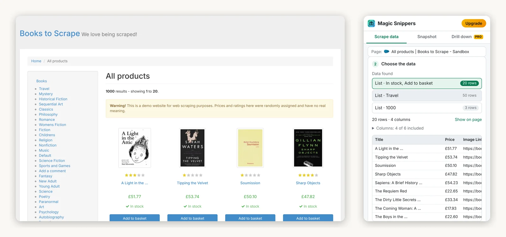
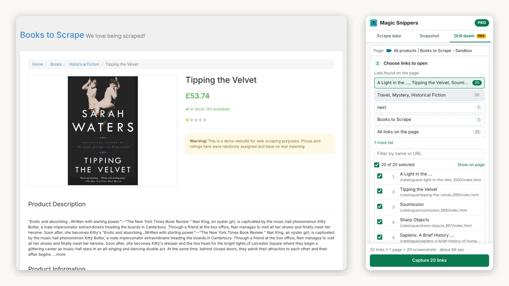

Chrome extension From the makers of Magic Scraper
Every page in the list, photographed.
Magic Snippers opens each link in a list and saves a full-page screenshot of the page it leads to — named, numbered and filed by site and date, with a spreadsheet listing every one. It also turns the table or list in front of you into a CSV, and snapshots any page whole, including the parts you'd have to scroll to.

Three tools in one side panel
It stays open beside the page while you work, and everything it makes lands in your Downloads folder.
Scrape data free
Finds the tables and repeating items on the page — search results, product grids, listings, directories — and puts the best match first. Leave out the columns you don't need, then download a CSV, save JSON, or copy the table straight into Excel or Google Sheets. It scrolls to load more rows and can follow a Next button to collect page after page.
Snapshot free
The whole page as one image, not just what fits on screen — including scrolling panels inside web apps, which ordinary full-page tools cut off.
Drill down 3 links per run free · every link with Pro
Scans the page, picks the main list of links for you — not the menu or the
sidebar — and opens each one in turn, saving a named full-page screenshot of every
page. Add extra pages inside each one if you want them too, a Details or
Reviews tab for example. Progress, time left, pause, stop, retry for anything that
failed, and an _index.csv of every page and file.

What it's for
A record of hundreds of pages before a migration, a redesign or an account closure — the job it was first built for was keeping a copy of every device page in a network dashboard before moving to a new one.
Audits and compliance evidence, price and product research, competitor archives, and pages behind your login: it runs in your own browser, with your own session.
Magic Scraper or Magic Snippers?
They are separate extensions, and work well side by side.
| Magic Scraper | Magic Snippers | |
|---|---|---|
| What you come away with | Rows and columns | Pictures of pages, plus simple CSV export |
| The page behind every row | Opened, and its fields added as extra columns | Opened, and saved as a full-page screenshot |
| Whole-page screenshots | No | Yes, free |
| Multi-page crawling | Next, infinite scroll, Load more | Next buttons, and scrolling to load |
| Exports | CSV, XLSX, JSON, Google Sheets | CSV, JSON, copy for Excel; PNG screenshots |
| Price | Free; Pro is one-time | Free; Pro is one-time |
If what you need is the data, Magic Scraper is the better tool. If you need to show what the pages looked like, this is.
Free, and Pro once
The free version isn't a trial. Pro removes the one limit, and it's yours permanently.
Free
$0
No clock on it.
- Scrape data: tables and lists to CSV · JSON, or copy for Excel
- Follows Next pages, scrolls to load more
- Snapshot: whole-page screenshots
- Drill down: 3 links per run
- Extra pages inside each link, retry, resume
Pro
$19
Paid once, through Gumroad. A licence key, for the free extension.
- Everything in Free
- Drill down on every link, in one run
- Updates to version 2 carry across
- 7-day refund, no questions asked
Reasonable questions
Does it send my data anywhere?
No. What it reads and saves stays in your browser and your Downloads folder. The only thing that leaves your computer is a Pro licence key, which is checked with Gumroad. Everything it does, in full.
Why does Chrome say it “started debugging this browser”?
That bar appears while a whole-page snapshot or a drill-down runs. Chrome's debugging interface is how an extension can make a tab tall enough to photograph the whole page at once. It's attached to that one tab only while it's capturing; don't press Cancel on it, or the capture stops.
Does it work on sites I'm signed in to?
Yes. It runs in your own browser, so it sees exactly what you see. It can't open Chrome's own pages, the Chrome Web Store or a new tab — Chrome blocks every extension there.
Is my Magic Scraper licence valid here?
No — they are separate products with separate licences. Each has a free version that does most of the job, so you can find out which one you need before paying.
How do I activate Pro?
Open the Magic Snippers panel, click Upgrade, paste the licence key from your Gumroad receipt and click Activate. It works on any browser you personally use.